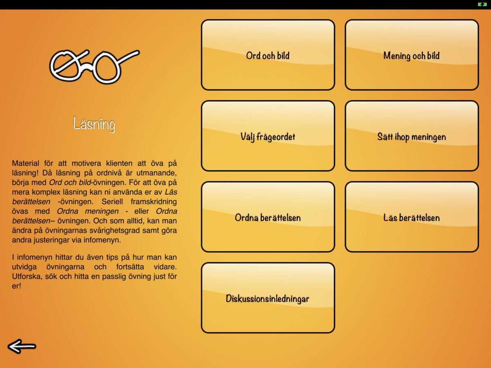
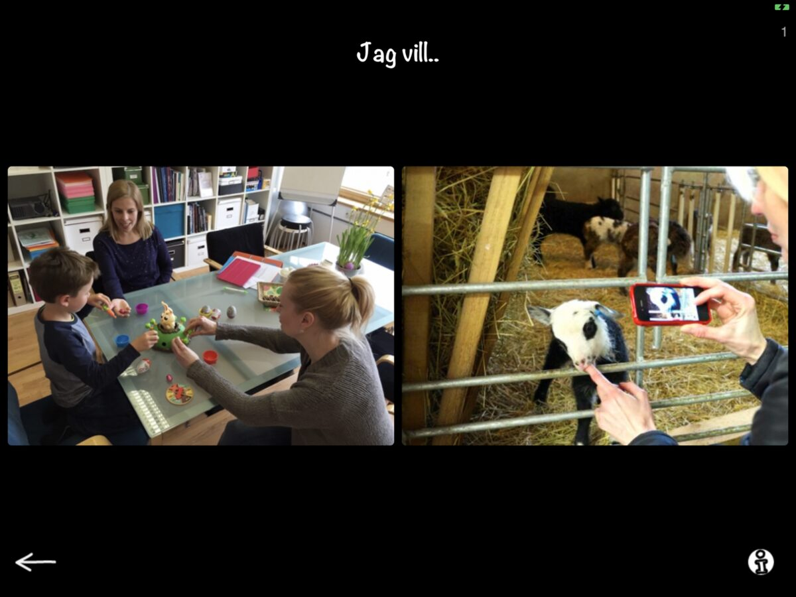
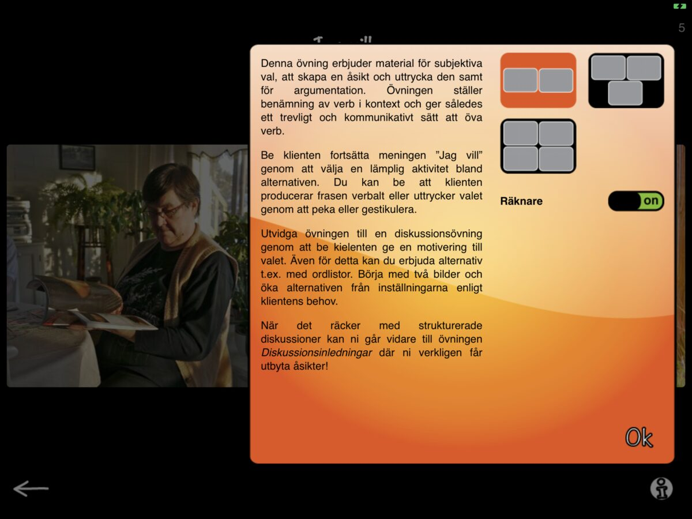
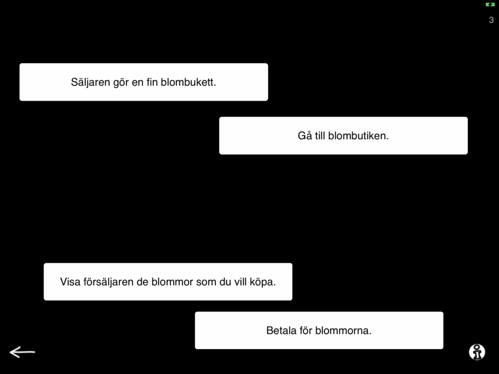
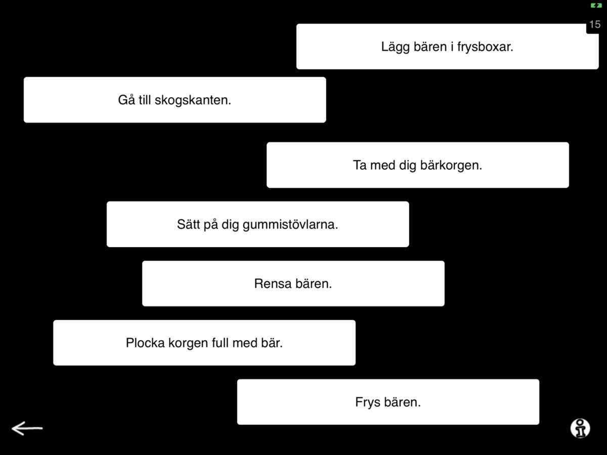

Sanapsis Svenska just got an update (1.4) and is now better than ever! We launched two new exercises, one in our Production category (Jag vill…) and one in Reading category (Ordna Berättelsen). Can you spot the newbies below?


Production category now has six exercises in total. The new I want to.. (Jag vill..) -exercise brings a new challenge to the mix. With this exercise you can challenge your patient to make choices and express opinions about different activities. Also useful for someone who has a tendency to persevere in their output - using a sentence frame with varied endings can be used to boost flexibility too!

Jag vill..

Jag vill.. Instructions
Reading category now has seven exercises on multiple levels of reading. The new Organize instructions (Ordna berättelsen) brings along meaningful reading and logic deduction based on what you read. On screen you will see 4-7 sentences (based on the settings you choose). These sentences contain step by step instructions to completing a task (e.g. hanging a painting, changing sheets, buying flowers from the florist, change light bulb, making a snowman). Organizing these instructions to form a coherent answer to the question: How do you …. (hang a painting, change sheets, buy flowers, change a light bulb, make a snowman…) provides deductive sentence level reading, a working memory challenge and the reward of reading the instructions to your therapist to make sure they make sense. Fun, huh?

Organize instructions, level 1

Organize instructions, level 3
Let us know what you think!
We are always happy to hear from you at sanapsis@puheklinikka.net or via this website.